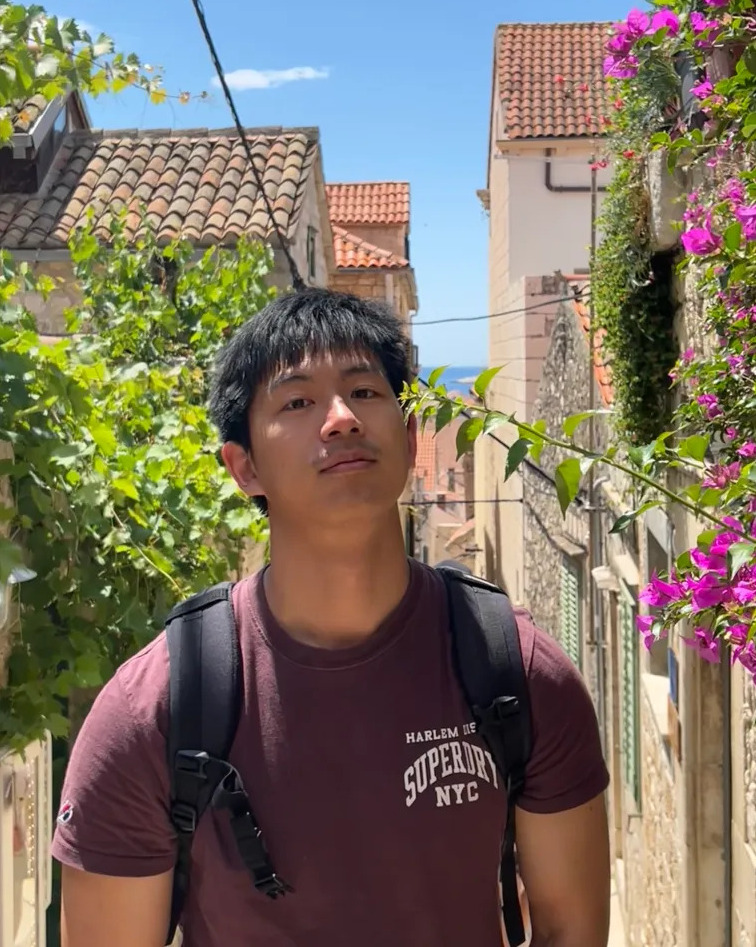
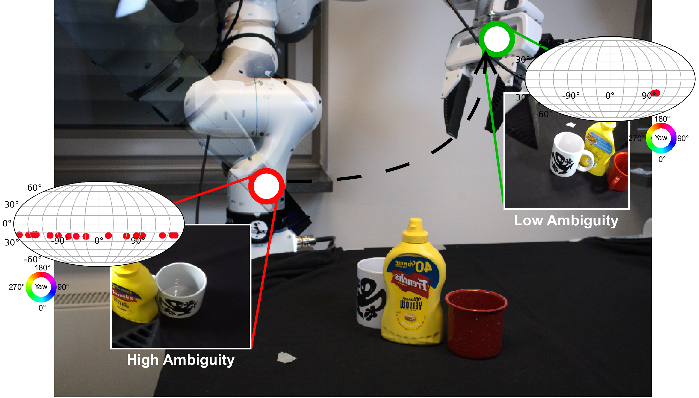

|
Yufeng Jin
I am a PhD student at
PEARL Lab at
TU Darmstadt, jointly advised by
Prof. Georgia Chalvatzaki and
Dr. Mathias Franzius
(Honda Research Institute Europe). Before starting my PhD in December 2023, I worked as a Robotics Perception Engineer at the Honda Research Institute Europe, where I conducted applied research in robot vision and teleoperation scenarios.
I received my Master’s degree in Mechatronics and Computer Science from the
Karlsruhe Institute of Technology (KIT) in 2021. |
 |
{kind=link}
Research |
|  |
Yufeng Jin, Niklas Funk, Vignesh Prasad, Zechu Li, Mathias Franzius, Jan Peters, Georgia Chalvatzaki ICRA, 2026 paper / website A probabilistic framework that leverages flow matching on the SE(3) manifold to estimate full 6D object pose distributions, enabling uncertainty-aware robotic manipulation under partial observability, occlusions, and symmetries. |
|
Zechu Li, Yufeng Jin, Daniel Ordoñez Apraez, Claudio Semini, Puze Liu, Georgia Chalvatzaki CoRL, 2025 paper / website A novel RL framework that explicitly leverages the inherent morphological symmetry in bimanual robotic systems to enable ambidextrous control. |
|

|
Yufeng Jin, Vignesh Prasad, Snehal Jauhri, Mathias Franzius, Georgia Chalvatzaki ICCV, 2025 paper / website A novel model-free framework for real-time 6D object pose estimation that leverages Gaussian Splatting for fast, accurate tracking and reconstruction from RGB-D input. |
|
Design and source code from Jon Barron's website. |